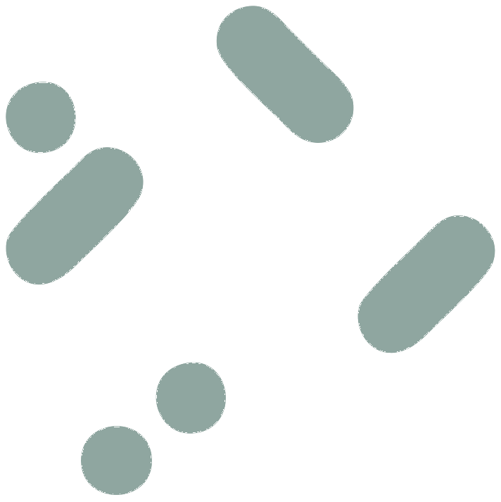
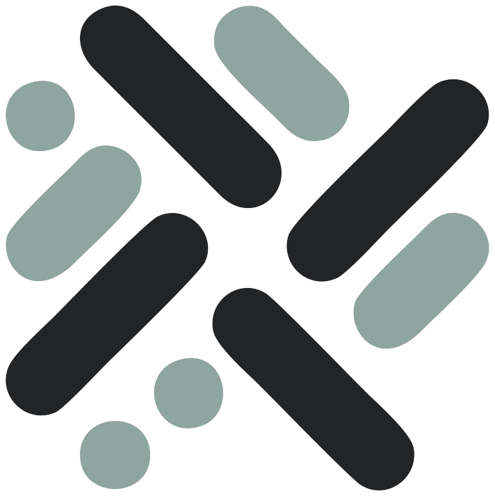

GitOps com Argo CD: por onde começar
Os princípios do GitOps e um primeiro deploy declarativo em Kubernetes, passo a passo.
Ler artigo
Guias práticos, boas práticas e aprendizagens do dia a dia com DevOps, GitOps, IaC, cloud e automação.
Os princípios do GitOps e um primeiro deploy declarativo em Kubernetes, passo a passo.
Ler artigo
Estado remoto, módulos, ambientes e validação automática: o essencial para escalar IaC.
Ler artigoAs etapas que não podem faltar para entregar software com rapidez e confiança.
Ler artigo